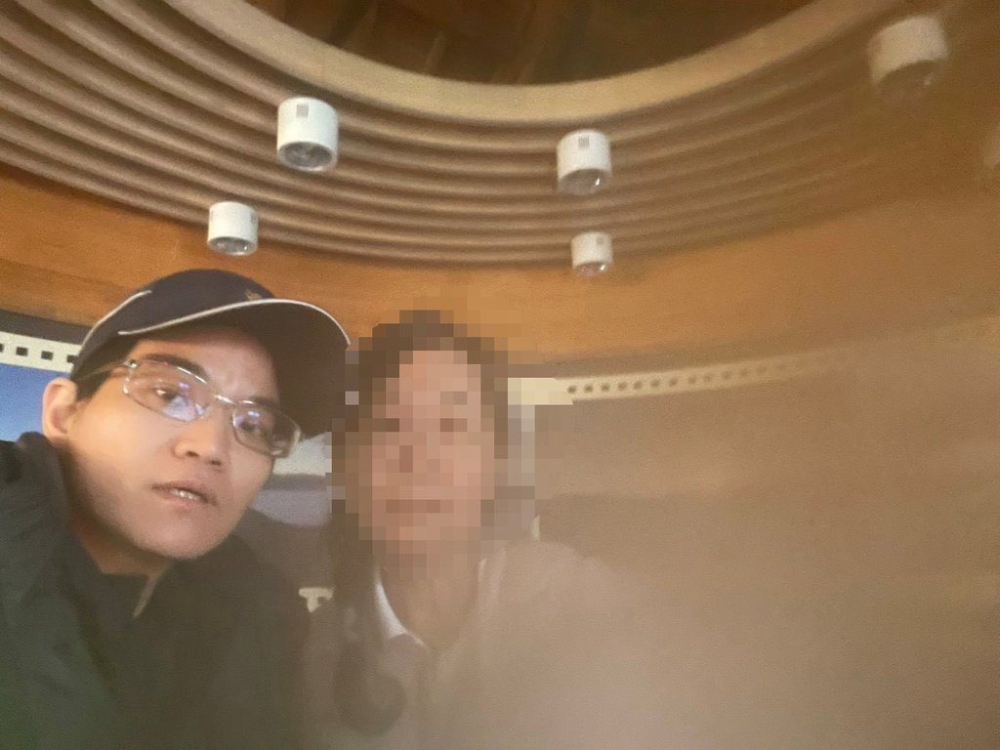

花蓮合歡山警員施行CPR搶救高山症民眾

可樂電子報小編/編輯
日前新城警分局合歡所警員白庭嘉接獲報案，稱在合歡山旅客服務中心內有民眾需緊急救護，經到場了解，係一名蔡姓男子突然高山症發作，且身體有嚴重失溫現象，甚至發生休克。
新城警分局表示，本案白庭嘉員警面對緊急狀況臨危不亂，憑藉平日所學急救技能，及時對患者施以急救，成功挽救寶貴生命，充分展現警察守護民眾生命安全的使命感，足為同仁表率。
據了解，白員見狀後立刻實施CPR心肺復甦術救助，持續約5分鐘後蔡男恢復自主呼吸，同時南投縣埔里救護人員也趕到現場，並立刻給予氧氣輔助呼吸，蔡男才恢復生命跡象，成功挽救男子生命，再送往埔里榮民醫院救治，目前已清醒、生命跡象穩定。
新城警分局呼籲，合歡山地區海拔較高，民眾上山前應充分評估自身身體狀況，可事先諮詢醫師並備妥相關藥物，登山期間若出現頭痛、噁心、呼吸困難等高山症症狀，應立即停止活動並儘速就醫，以維護自身安全。